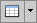
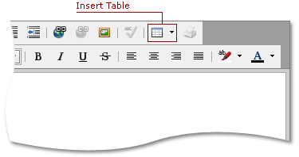
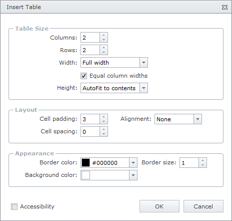

Create a Table in HTML Editor
Create a Table
Place a mouse pointer where you want to create a table. Click the  button in the editor's toolbar.

Specify Table Settings
Pressing the Insert Table button invokes the Insert Table dialog.

The invoked window provides a set of parameters to customize a table's settings.
Table Size
These settings are used to specify the row/column count and the table's width and height.
Layout
This section contains settings useful for customizing the table's layout (paddings, alignment).
Appearance
These settings are used to customize the table's background color and borders size and color.
Check the Accessibility to enable accessibility compliance for the table.
Click the OK or Cancel button to save or reject the changes.